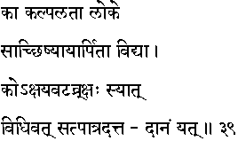
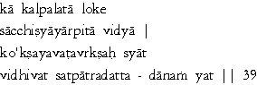

|

|
Verse 39 - Meaning:
Q: What (kaa) can be considered as the equivalent of Kalpalataa (also - Kalpataru - the fabled tree that is supposed to grant one's wishes) in this world (loke)?
A: The learning (vidyaa) transmitted (arpitaa) to a worthy disciple (sat-chishyaaya) with the conviction that such learning will surely be transmitted to generations of disciples.
Q:Which (ko) is the Akshaya-vata ? (the tree at Gayaa - the place where funeral obsequies are performed for the permanent redemption of one's ancestors) ?
A: The gift (daanam) given (datta) to a worthy person (sat-paatra) with a proper attitude of mind.(vidhivat)
|